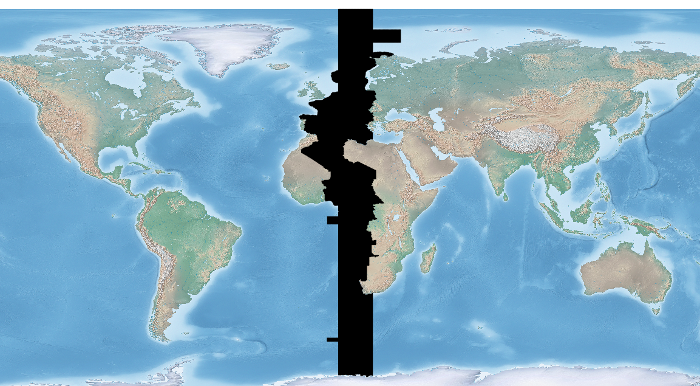
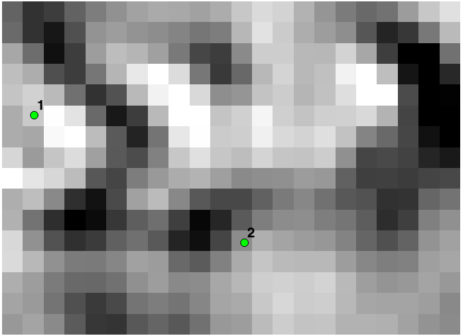

Raster Layers¶
Close a raster dataset¶
This recipe shows how to close a raster dataset. It is useful in the middle of a script, to recover the resources held by accessing the dataset, remove file locks, etc. It is not necessary at the end of the script, as the Python garbage collector will do the same thing automatically when the script exits. Further discussion of this topic can be found in this GIS StackExchange question.
import gdal
# open dataset
ds = gdal.Open('test.tif')
# close dataset
ds = None
Get Raster Metadata¶
Get raster metadata for quick-and-dirty resolution checks
from osgeo import gdal
gtif = gdal.Open( "INPUT.tif" )
print gtif.GetMetadata()
Get Raster Band¶
Get a raster band. Notice how we are handling runtime errors this function might throw.
from osgeo import gdal
import sys
# this allows GDAL to throw Python Exceptions
gdal.UseExceptions()
try:
src_ds = gdal.Open( "INPUT.tif" )
except RuntimeError, e:
print 'Unable to open INPUT.tif'
print e
sys.exit(1)
try:
srcband = src_ds.GetRasterBand(1)
except RuntimeError, e:
# for example, try GetRasterBand(10)
print 'Band ( %i ) not found' % band_num
print e
sys.exit(1)
Loop Through All Raster Bands¶
Loop through all raster bands and do something useful like listing band statistics.
from osgeo import gdal
import sys
src_ds = gdal.Open( "INPUT.tif" )
if src_ds is None:
print 'Unable to open INPUT.tif'
sys.exit(1)
print "[ RASTER BAND COUNT ]: ", src_ds.RasterCount
for band in range( src_ds.RasterCount ):
band += 1
print "[ GETTING BAND ]: ", band
srcband = src_ds.GetRasterBand(band)
if srcband is None:
continue
stats = srcband.GetStatistics( True, True )
if stats is None:
continue
print "[ STATS ] = Minimum=%.3f, Maximum=%.3f, Mean=%.3f, StdDev=%.3f" % ( \
stats[0], stats[1], stats[2], stats[3] )
Get Raster Band Information¶
Using the documentation on the Band API we can write a script that dumps out single band information
from osgeo import gdal
import sys
gdal.UseExceptions()
def Usage():
print("""
$ getrasterband.py [ band number ] input-raster
""")
sys.exit(1)
def main( band_num, input_file ):
src_ds = gdal.Open( input_file )
if src_ds is None:
print 'Unable to open %s' % src_filename
sys.exit(1)
try:
srcband = src_ds.GetRasterBand(band_num)
except RuntimeError, e:
print 'No band %i found' % band_num
print e
sys.exit(1)
print "[ NO DATA VALUE ] = ", srcband.GetNoDataValue()
print "[ MIN ] = ", srcband.GetMinimum()
print "[ MAX ] = ", srcband.GetMaximum()
print "[ SCALE ] = ", srcband.GetScale()
print "[ UNIT TYPE ] = ", srcband.GetUnitType()
ctable = srcband.GetColorTable()
if ctable is None:
print 'No ColorTable found'
sys.exit(1)
print "[ COLOR TABLE COUNT ] = ", ctable.GetCount()
for i in range( 0, ctable.GetCount() ):
entry = ctable.GetColorEntry( i )
if not entry:
continue
print "[ COLOR ENTRY RGB ] = ", ctable.GetColorEntryAsRGB( i, entry )
if __name__ == '__main__':
if len( sys.argv ) < 3:
print """
[ ERROR ] you must supply at least two arguments:
1) the band number to retrieve and 2) input raster
"""
Usage()
main( int(sys.argv[1]), sys.argv[2] )
Polygonize a Raster Band¶
Turn a single raster band into a vector polygon!
If you haven’t before, notice that some of the gdal utilties are actually Python scripts. Go find them on your computer, read the source code and mine them for API tricks. It turns out the gdal_polygonize utility just wraps a call to GDALFPolygonize so writing your own hacky polygonize Python script is pretty easy.
The raster we are going to polygonize:

from osgeo import gdal, ogr
import sys
# this allows GDAL to throw Python Exceptions
gdal.UseExceptions()
#
# get raster datasource
#
src_ds = gdal.Open( "INPUT.tif" )
if src_ds is None:
print 'Unable to open %s' % src_filename
sys.exit(1)
try:
srcband = src_ds.GetRasterBand(3)
except RuntimeError, e:
# for example, try GetRasterBand(10)
print 'Band ( %i ) not found' % band_num
print e
sys.exit(1)
#
# create output datasource
#
dst_layername = "POLYGONIZED_STUFF"
drv = ogr.GetDriverByName("ESRI Shapefile")
dst_ds = drv.CreateDataSource( dst_layername + ".shp" )
dst_layer = dst_ds.CreateLayer(dst_layername, srs = None )
gdal.Polygonize( srcband, None, dst_layer, -1, [], callback=None )
A closeup of the vector output – this is northern Italy:

Convert an OGR File to a Raster¶
This recipe takes in a OGR file (e.g. shapefile) and creates a new raster Tiff file based on the shapefile.
from osgeo import gdal, ogr
# Define pixel_size and NoData value of new raster
pixel_size = 25
NoData_value = -9999
# Filename of input OGR file
vector_fn = 'test.shp'
# Filename of the raster Tiff that will be created
raster_fn = 'test.tif'
# Open the data source and read in the extent
source_ds = ogr.Open(vector_fn)
source_layer = source_ds.GetLayer()
source_srs = source_layer.GetSpatialRef()
x_min, x_max, y_min, y_max = source_layer.GetExtent()
# Create the destination data source
x_res = int((x_max - x_min) / pixel_size)
y_res = int((y_max - y_min) / pixel_size)
target_ds = gdal.GetDriverByName('GTiff').Create(raster_fn, x_res, y_res, gdal.GDT_Byte)
target_ds.SetGeoTransform((x_min, pixel_size, 0, y_max, 0, -pixel_size))
band = target_ds.GetRasterBand(1)
band.SetNoDataValue(NoData_value)
# Rasterize
gdal.RasterizeLayer(target_ds, [1], source_layer, burn_values=[0])
Clip a GeoTiff with Shapefile¶
Let’s use some Natural Earth data and clip a 10m relief geotiff with the Europe/Paris timezone polygon. Most of the following workflow came from this geospatialpython post . However, the source code on that site assumes your clipping polygon is the same extent as the input geotiff. If it is not, then your clipped geotiff will take the input geotiff’s extent, which will be incorrect. The modified script below takes this into account and sets the correct x,y offsets for the clipped geotiff. Note, in the following example we are assuming you have the Python Imaging Library installed.
Before Image: the input Natural Earth 10m geotiff with the timezone overlay we want to clip out:
from osgeo import gdal, gdalnumeric, ogr, osr
import Image, ImageDraw
import os, sys
gdal.UseExceptions()
# This function will convert the rasterized clipper shapefile
# to a mask for use within GDAL.
def imageToArray(i):
"""
Converts a Python Imaging Library array to a
gdalnumeric image.
"""
a=gdalnumeric.fromstring(i.tostring(),'b')
a.shape=i.im.size[1], i.im.size[0]
return a
def arrayToImage(a):
"""
Converts a gdalnumeric array to a
Python Imaging Library Image.
"""
i=Image.fromstring('L',(a.shape[1],a.shape[0]),
(a.astype('b')).tostring())
return i
def world2Pixel(geoMatrix, x, y):
"""
Uses a gdal geomatrix (gdal.GetGeoTransform()) to calculate
the pixel location of a geospatial coordinate
"""
ulX = geoMatrix[0]
ulY = geoMatrix[3]
xDist = geoMatrix[1]
yDist = geoMatrix[5]
rtnX = geoMatrix[2]
rtnY = geoMatrix[4]
pixel = int((x - ulX) / xDist)
line = int((ulY - y) / xDist)
return (pixel, line)
#
# EDIT: this is basically an overloaded
# version of the gdal_array.OpenArray passing in xoff, yoff explicitly
# so we can pass these params off to CopyDatasetInfo
#
def OpenArray( array, prototype_ds = None, xoff=0, yoff=0 ):
ds = gdal.Open( gdalnumeric.GetArrayFilename(array) )
if ds is not None and prototype_ds is not None:
if type(prototype_ds).__name__ == 'str':
prototype_ds = gdal.Open( prototype_ds )
if prototype_ds is not None:
gdalnumeric.CopyDatasetInfo( prototype_ds, ds, xoff=xoff, yoff=yoff )
return ds
def histogram(a, bins=range(0,256)):
"""
Histogram function for multi-dimensional array.
a = array
bins = range of numbers to match
"""
fa = a.flat
n = gdalnumeric.searchsorted(gdalnumeric.sort(fa), bins)
n = gdalnumeric.concatenate([n, [len(fa)]])
hist = n[1:]-n[:-1]
return hist
def stretch(a):
"""
Performs a histogram stretch on a gdalnumeric array image.
"""
hist = histogram(a)
im = arrayToImage(a)
lut = []
for b in range(0, len(hist), 256):
# step size
step = reduce(operator.add, hist[b:b+256]) / 255
# create equalization lookup table
n = 0
for i in range(256):
lut.append(n / step)
n = n + hist[i+b]
im = im.point(lut)
return imageToArray(im)
def main( shapefile_path, raster_path ):
# Load the source data as a gdalnumeric array
srcArray = gdalnumeric.LoadFile(raster_path)
# Also load as a gdal image to get geotransform
# (world file) info
srcImage = gdal.Open(raster_path)
geoTrans = srcImage.GetGeoTransform()
# Create an OGR layer from a boundary shapefile
shapef = ogr.Open(shapefile_path)
lyr = shapef.GetLayer( os.path.split( os.path.splitext( shapefile_path )[0] )[1] )
poly = lyr.GetNextFeature()
# Convert the layer extent to image pixel coordinates
minX, maxX, minY, maxY = lyr.GetExtent()
ulX, ulY = world2Pixel(geoTrans, minX, maxY)
lrX, lrY = world2Pixel(geoTrans, maxX, minY)
# Calculate the pixel size of the new image
pxWidth = int(lrX - ulX)
pxHeight = int(lrY - ulY)
clip = srcArray[:, ulY:lrY, ulX:lrX]
#
# EDIT: create pixel offset to pass to new image Projection info
#
xoffset = ulX
yoffset = ulY
print "Xoffset, Yoffset = ( %f, %f )" % ( xoffset, yoffset )
# Create a new geomatrix for the image
geoTrans = list(geoTrans)
geoTrans[0] = minX
geoTrans[3] = maxY
# Map points to pixels for drawing the
# boundary on a blank 8-bit,
# black and white, mask image.
points = []
pixels = []
geom = poly.GetGeometryRef()
pts = geom.GetGeometryRef(0)
for p in range(pts.GetPointCount()):
points.append((pts.GetX(p), pts.GetY(p)))
for p in points:
pixels.append(world2Pixel(geoTrans, p[0], p[1]))
rasterPoly = Image.new("L", (pxWidth, pxHeight), 1)
rasterize = ImageDraw.Draw(rasterPoly)
rasterize.polygon(pixels, 0)
mask = imageToArray(rasterPoly)
# Clip the image using the mask
clip = gdalnumeric.choose(mask, \
(clip, 0)).astype(gdalnumeric.uint8)
# This image has 3 bands so we stretch each one to make them
# visually brighter
for i in range(3):
clip[i,:,:] = stretch(clip[i,:,:])
# Save new tiff
#
# EDIT: instead of SaveArray, let's break all the
# SaveArray steps out more explicity so
# we can overwrite the offset of the destination
# raster
#
### the old way using SaveArray
#
# gdalnumeric.SaveArray(clip, "OUTPUT.tif", format="GTiff", prototype=raster_path)
#
###
#
gtiffDriver = gdal.GetDriverByName( 'GTiff' )
if gtiffDriver is None:
raise ValueError("Can't find GeoTiff Driver")
gtiffDriver.CreateCopy( "OUTPUT.tif",
OpenArray( clip, prototype_ds=raster_path, xoff=xoffset, yoff=yoffset )
)
# Save as an 8-bit jpeg for an easy, quick preview
clip = clip.astype(gdalnumeric.uint8)
gdalnumeric.SaveArray(clip, "OUTPUT.jpg", format="JPEG")
gdal.ErrorReset()
if __name__ == '__main__':
#
# example run : $ python clip.py /<full-path>/<shapefile-name>.shp /<full-path>/<raster-name>.tif
#
if len( sys.argv ) < 2:
print "[ ERROR ] you must two args. 1) the full shapefile path and 2) the full raster path"
sys.exit( 1 )
main( sys.argv[1], sys.argv[2] )
After Image: the clipped geotiff with the timezone border overlayed in orange on top of input geotiff:

Calculate zonal statistics¶
This recipe calculates statistics on values of a raster within the zones of a vector dataset. It returns for each feature a dictionary item (FID) with the statistical values in the following order: Average, Mean, Medain, Standard Deviation, Variance
import gdal, ogr, osr, numpy
import sys
def zonal_stats(feat, input_zone_polygon, input_value_raster):
# Open data
raster = gdal.Open(input_value_raster)
shp = ogr.Open(input_zone_polygon)
lyr = shp.GetLayer()
# Get raster georeference info
transform = raster.GetGeoTransform()
xOrigin = transform[0]
yOrigin = transform[3]
pixelWidth = transform[1]
pixelHeight = transform[5]
# Reproject vector geometry to same projection as raster
sourceSR = lyr.GetSpatialRef()
targetSR = osr.SpatialReference()
targetSR.ImportFromWkt(raster.GetProjectionRef())
coordTrans = osr.CoordinateTransformation(sourceSR,targetSR)
feat = lyr.GetNextFeature()
geom = feat.GetGeometryRef()
geom.Transform(coordTrans)
# Get extent of feat
geom = feat.GetGeometryRef()
if (geom.GetGeometryName() == 'MULTIPOLYGON'):
count = 0
pointsX = []; pointsY = []
for polygon in geom:
geomInner = geom.GetGeometryRef(count)
ring = geomInner.GetGeometryRef(0)
numpoints = ring.GetPointCount()
for p in range(numpoints):
lon, lat, z = ring.GetPoint(p)
pointsX.append(lon)
pointsY.append(lat)
count += 1
elif (geom.GetGeometryName() == 'POLYGON'):
ring = geom.GetGeometryRef(0)
numpoints = ring.GetPointCount()
pointsX = []; pointsY = []
for p in range(numpoints):
lon, lat, z = ring.GetPoint(p)
pointsX.append(lon)
pointsY.append(lat)
else:
sys.exit("ERROR: Geometry needs to be either Polygon or Multipolygon")
xmin = min(pointsX)
xmax = max(pointsX)
ymin = min(pointsY)
ymax = max(pointsY)
# Specify offset and rows and columns to read
xoff = int((xmin - xOrigin)/pixelWidth)
yoff = int((yOrigin - ymax)/pixelWidth)
xcount = int((xmax - xmin)/pixelWidth)+1
ycount = int((ymax - ymin)/pixelWidth)+1
# Create memory target raster
target_ds = gdal.GetDriverByName('MEM').Create('', xcount, ycount, gdal.GDT_Byte)
target_ds.SetGeoTransform((
xmin, pixelWidth, 0,
ymax, 0, pixelHeight,
))
# Create for target raster the same projection as for the value raster
raster_srs = osr.SpatialReference()
raster_srs.ImportFromWkt(raster.GetProjectionRef())
target_ds.SetProjection(raster_srs.ExportToWkt())
# Rasterize zone polygon to raster
gdal.RasterizeLayer(target_ds, [1], lyr, burn_values=[1])
# Read raster as arrays
banddataraster = raster.GetRasterBand(1)
dataraster = banddataraster.ReadAsArray(xoff, yoff, xcount, ycount).astype(numpy.float)
bandmask = target_ds.GetRasterBand(1)
datamask = bandmask.ReadAsArray(0, 0, xcount, ycount).astype(numpy.float)
# Mask zone of raster
zoneraster = numpy.ma.masked_array(dataraster, numpy.logical_not(datamask))
# Calculate statistics of zonal raster
return numpy.average(zoneraster),numpy.mean(zoneraster),numpy.median(zoneraster),numpy.std(zoneraster),numpy.var(zoneraster)
def loop_zonal_stats(input_zone_polygon, input_value_raster):
shp = ogr.Open(input_zone_polygon)
lyr = shp.GetLayer()
featList = range(lyr.GetFeatureCount())
statDict = {}
for FID in featList:
feat = lyr.GetFeature(FID)
meanValue = zonal_stats(feat, input_zone_polygon, input_value_raster)
statDict[FID] = meanValue
return statDict
def main(input_zone_polygon, input_value_raster):
return loop_zonal_stats(input_zone_polygon, input_value_raster)
if __name__ == "__main__":
#
# Returns for each feature a dictionary item (FID) with the statistical values in the following order: Average, Mean, Medain, Standard Deviation, Variance
#
# example run : $ python grid.py <full-path><output-shapefile-name>.shp xmin xmax ymin ymax gridHeight gridWidth
#
if len( sys.argv ) != 3:
print "[ ERROR ] you must supply two arguments: input-zone-shapefile-name.shp input-value-raster-name.tif "
sys.exit( 1 )
print 'Returns for each feature a dictionary item (FID) with the statistical values in the following order: Average, Mean, Medain, Standard Deviation, Variance'
print main( sys.argv[1], sys.argv[2] )
Raster to vector line¶
This recipe converts raster pixels with a specified value to vector lines. For example the blue pixels (value = 0) are converted to vector lines.

import ogr, gdal, osr, os
import numpy as np
import itertools
from math import sqrt,ceil
def pixelOffset2coord(rasterfn,xOffset,yOffset):
raster = gdal.Open(rasterfn)
geotransform = raster.GetGeoTransform()
originX = geotransform[0]
originY = geotransform[3]
pixelWidth = geotransform[1]
pixelHeight = geotransform[5]
coordX = originX+pixelWidth*xOffset
coordY = originY+pixelHeight*yOffset
return coordX, coordY
def raster2array(rasterfn):
raster = gdal.Open(rasterfn)
band = raster.GetRasterBand(1)
array = band.ReadAsArray()
return array
def array2shp(array,outSHPfn,rasterfn,pixelValue):
# max distance between points
raster = gdal.Open(rasterfn)
geotransform = raster.GetGeoTransform()
pixelWidth = geotransform[1]
maxDistance = ceil(sqrt(2*pixelWidth*pixelWidth))
print maxDistance
# array2dict
count = 0
roadList = np.where(array == pixelValue)
multipoint = ogr.Geometry(ogr.wkbMultiLineString)
pointDict = {}
for indexY in roadList[0]:
indexX = roadList[1][count]
Xcoord, Ycoord = pixelOffset2coord(rasterfn,indexX,indexY)
pointDict[count] = (Xcoord, Ycoord)
count += 1
# dict2wkbMultiLineString
multiline = ogr.Geometry(ogr.wkbMultiLineString)
for i in itertools.combinations(pointDict.values(), 2):
point1 = ogr.Geometry(ogr.wkbPoint)
point1.AddPoint(i[0][0],i[0][1])
point2 = ogr.Geometry(ogr.wkbPoint)
point2.AddPoint(i[1][0],i[1][1])
distance = point1.Distance(point2)
if distance < maxDistance:
line = ogr.Geometry(ogr.wkbLineString)
line.AddPoint(i[0][0],i[0][1])
line.AddPoint(i[1][0],i[1][1])
multiline.AddGeometry(line)
# wkbMultiLineString2shp
shpDriver = ogr.GetDriverByName("ESRI Shapefile")
if os.path.exists(outSHPfn):
shpDriver.DeleteDataSource(outSHPfn)
outDataSource = shpDriver.CreateDataSource(outSHPfn)
outLayer = outDataSource.CreateLayer(outSHPfn, geom_type=ogr.wkbMultiLineString )
featureDefn = outLayer.GetLayerDefn()
outFeature = ogr.Feature(featureDefn)
outFeature.SetGeometry(multiline)
outLayer.CreateFeature(outFeature)
def main(rasterfn,outSHPfn,pixelValue):
array = raster2array(rasterfn)
array2shp(array,outSHPfn,rasterfn,pixelValue)
if __name__ == "__main__":
rasterfn = 'test.tif'
outSHPfn = 'test.shp'
pixelValue = 0
main(rasterfn,outSHPfn,pixelValue)
The green lines show the converted lines.

Create raster from array¶
This recipe creates a raster from an array
import gdal, ogr, os, osr
import numpy as np
def array2raster(newRasterfn,rasterOrigin,pixelWidth,pixelHeight,array):
cols = array.shape[1]
rows = array.shape[0]
originX = rasterOrigin[0]
originY = rasterOrigin[1]
driver = gdal.GetDriverByName('GTiff')
outRaster = driver.Create(newRasterfn, cols, rows, gdal.GDT_Byte)
outRaster.SetGeoTransform((originX, pixelWidth, 0, originY, 0, pixelHeight))
outband = outRaster.GetRasterBand(1)
outband.WriteArray(array)
outRasterSRS = osr.SpatialReference()
outRasterSRS.ImportFromEPSG(4326)
outRaster.SetProjection(outRasterSRS.ExportToWkt())
outband.FlushCache()
def main(newRasterfn,rasterOrigin,pixelWidth,pixelHeight,array):
reversed_arr = array[::-1] # reverse array so the tif looks like the array
array2raster(newRasterfn,rasterOrigin,pixelWidth,pixelHeight,reversed_arr) # convert array to raster
if __name__ == "__main__":
rasterOrigin = (-123.25745,45.43013)
pixelWidth = 10
pixelHeight = 10
newRasterfn = 'test.tif'
array = np.array([[ 1, 1, 1, 1, 1, 1, 1, 1, 1, 1, 1, 1, 1, 1, 1, 1, 1, 1, 1],
[ 1, 1, 1, 1, 1, 1, 1, 1, 1, 1, 1, 1, 1, 1, 1, 1, 1, 1, 1],
[ 1, 0, 0, 0, 0, 1, 0, 0, 0, 0, 1, 0, 0, 0, 1, 0, 1, 1, 1],
[ 1, 0, 1, 1, 1, 1, 1, 0, 1, 0, 1, 0, 1, 0, 1, 0, 1, 1, 1],
[ 1, 0, 1, 0, 0, 1, 1, 0, 1, 0, 1, 0, 0, 0, 1, 0, 1, 1, 1],
[ 1, 0, 1, 1, 0, 1, 1, 0, 1, 0, 1, 0, 1, 0, 1, 0, 1, 1, 1],
[ 1, 0, 0, 0, 0, 1, 0, 0, 0, 0, 1, 0, 1, 0, 1, 0, 0, 0, 1],
[ 1, 1, 1, 1, 1, 1, 1, 1, 1, 1, 1, 1, 1, 1, 1, 1, 1, 1, 1],
[ 1, 1, 1, 1, 1, 1, 1, 1, 1, 1, 1, 1, 1, 1, 1, 1, 1, 1, 1],
[ 1, 1, 1, 1, 1, 1, 1, 1, 1, 1, 1, 1, 1, 1, 1, 1, 1, 1, 1]])
main(newRasterfn,rasterOrigin,pixelWidth,pixelHeight,array)
The create raster from the example array looks like this:

Create least cost path¶
This recipe creates a least cost path between two coordinates based on a raster cost surface. In the example below, a cost path between point 1 and point 2 is created based on a slope raster.
import gdal, osr
from skimage.graph import route_through_array
import numpy as np
def raster2array(rasterfn):
raster = gdal.Open(rasterfn)
band = raster.GetRasterBand(1)
array = band.ReadAsArray()
return array
def coord2pixelOffset(rasterfn,x,y):
raster = gdal.Open(rasterfn)
geotransform = raster.GetGeoTransform()
originX = geotransform[0]
originY = geotransform[3]
pixelWidth = geotransform[1]
pixelHeight = geotransform[5]
xOffset = int((x - originX)/pixelWidth)
yOffset = int((y - originY)/pixelHeight)
return xOffset,yOffset
def createPath(CostSurfacefn,costSurfaceArray,startCoord,stopCoord):
# coordinates to array index
startCoordX = startCoord[0]
startCoordY = startCoord[1]
startIndexX,startIndexY = coord2pixelOffset(CostSurfacefn,startCoordX,startCoordY)
stopCoordX = stopCoord[0]
stopCoordY = stopCoord[1]
stopIndexX,stopIndexY = coord2pixelOffset(CostSurfacefn,stopCoordX,stopCoordY)
# create path
indices, weight = route_through_array(costSurfaceArray, (startIndexY,startIndexX), (stopIndexY,stopIndexX),geometric=True,fully_connected=True)
indices = np.array(indices).T
path = np.zeros_like(costSurfaceArray)
path[indices[0], indices[1]] = 1
return path
def array2raster(newRasterfn,rasterfn,array):
raster = gdal.Open(rasterfn)
geotransform = raster.GetGeoTransform()
originX = geotransform[0]
originY = geotransform[3]
pixelWidth = geotransform[1]
pixelHeight = geotransform[5]
cols = array.shape[1]
rows = array.shape[0]
driver = gdal.GetDriverByName('GTiff')
outRaster = driver.Create(newRasterfn, cols, rows, gdal.GDT_Byte)
outRaster.SetGeoTransform((originX, pixelWidth, 0, originY, 0, pixelHeight))
outband = outRaster.GetRasterBand(1)
outband.WriteArray(array)
outRasterSRS = osr.SpatialReference()
outRasterSRS.ImportFromWkt(raster.GetProjectionRef())
outRaster.SetProjection(outRasterSRS.ExportToWkt())
outband.FlushCache()
def main(CostSurfacefn,outputPathfn,startCoord,stopCoord):
costSurfaceArray = raster2array(CostSurfacefn) # creates array from cost surface raster
pathArray = createPath(CostSurfacefn,costSurfaceArray,startCoord,stopCoord) # creates path array
array2raster(outputPathfn,CostSurfacefn,pathArray) # converts path array to raster
if __name__ == "__main__":
CostSurfacefn = 'CostSurface.tif'
startCoord = (345387.871,1267855.277)
stopCoord = (345479.425,1267799.626)
outputPathfn = 'Path.tif'
main(CostSurfacefn,outputPathfn,startCoord,stopCoord)
The created cost path between the points.